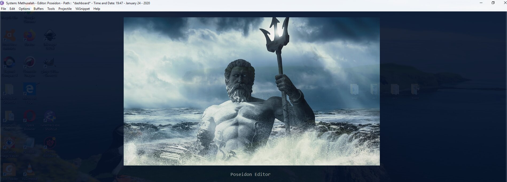

Directly below are the subheadings to the first main heading of my initialization file, see my last post Emacs Configuration Overview. I'll go through the lines of code in order, but remember, the line numbers you see in Hugo's code block css styling are relative to the code on this page not the emacs initialization file [Hugo is the Static Content Management System based on GO I used to make this blog]. There are roughly 760 lines of code beneath these subheadings (all of it quick and dirty). I'll go through the relevant stuff and skip anything redundant in this post and the next few. Each post will have the following reference headings, and then the breakdown and write-up below that.
Beginning of Initialization File
SET UP, DEFAULTS, AND CUSTOMIZATION
Necessary Adjustments when you set-up on a new computer
Paths to Update on Change
Executable Paths
Libraries
Function declarations
Emacs Customization Seperate File
Emax Defaults
Some Defaults
Frames, Buffers, And Lines
Some Custom Default Functions
Some New Key Bindings
Popup, Pos-tip,Tooltip, Posframe
Which Key
Oh yes, when I installed the dashboard package there was an option to choose a picture. That's when I named my Emacs configuration. Welcome to Poseidon the text editor.

Necessary Adjustments when you set-up on a new computer
steps needed to get set-up on a new computer
install emacs
install external executables
paste .emacs and myinit.org from active emacs installation to new emacs installation
Change load paths in myinit.org
paste dependency folders to new emacs (snippets, etc.)
adjust home variable on new system
adjust emacs to have administrator rights
restart emacs and deal with each error as emacs runs through myinit.org code (Most errors should be easily resolved by updating directory paths, providing missing libraries, ensuring executables and missing library dependencies are installed)
to troubleshoot basic errors use emacs debugger, messages, and the restart-emacs package. Also, comment out org tangle blocks and initialize the init incrementally.
Paths to Update on Change
Here paths to executables, libraries, and external urls are stored in variables. When you install Poseidon on a new system, or change a program or its location, change the path variable assignments here. Later in the code, usually in a use-package :config or a function the variables are called.
Oh, btw, before the path assignments is an org-tangle block, delineated by the org-mode elisp code on lines 2 and 4. Everything inside them is processed by emacs, everything outside is notes and text you can push to the web easily.
; most of the executables I use from within emacs, except some security ones and some of the browsers
(defvarxampp-p".../xampp/xampp-control.exe")
(defvarnotepad++-p".../Program Files/Notepad++/notepad++.exe")
(defvarbackup-init-p".../emacs/emax/run-backup-init-silently.vbs")
(defvarimage-magick-p".../Program Files/ImageMagick-7.0.8-Q16/magick.exe")
(defvardropbox-p".../Program Files (x86)/Dropbox/Client/Dropbox.exe")
(defvarwordnet-command-p".../Program Files (x86)/WordNet/2.1/bin/wn.exe")
(defvarwin-calc-p".../Windows/System32/calc.exe")
(defvarscreen-cast-p".../Program Files (x86)/Screencast-O-Matic/v2/Screencast-O-Matic.exe")
(defvarfsviewer-p".../Program Files (x86)/FastStone Image Viewer/FSViewer.exe")
(defvargimp-p".../Program Files/GIMP 2/bin/gimp-2.10.exe" )
(defvar7z-p".../Program Files/7-Zip/7z.exe")
(defvarwinword-p".../Program Files/Microsoft Office/root/Office16/WINWORD.exe")
(defvarexcel-p".../Program Files/Microsoft Office/root/Office16/EXCEL.exe")
(defvarmpd-start-p".../Users/Methuselah/Documents/mpd-windows-master/start-silently-mpd.vbs")
(defvarmpd-stop-p".../Users/Methuselah/Documents/mpd-windows-master/stop-mpd-silently.vbs")
(defvarkeycast-p".../Program Files/Keycastow/keycastow.exe")
(defvarpandoc-p".../Users/Methuselah/AppData/Local/Pandoc/pandoc.exe")
(defvarfirefox-p".../Program Files/Mozilla Firefox/firefox.exe")
(defvargit-exe-p".../Program Files/Git/mingw64/libexec/git-core/git.exe")
(defvarwin-ubuntu-exe-p".../Windows/System32/wsl.exe")
(defvaratom-exe-p".../Users/Methuselah/AppData/Local/atom/atom.exe")
(defvardefault-comspec-p"C:\\Windows\\system32\\cmd.exe")
(defvarbash-comspec-p"C:\\Windows\\system32\\wsl.exe")
(defvardefault-shell-file-name-p".../emacs/libexec/emacs/26.2/x86_64-w64-mingw32/cmdproxy.exe")
(defvarbash-shell-file-name-p".../Windows/system32/bash.exe")
(defvargit-bash-shell-file-name-p".../Program Files/Git/git-bash.exe")
(defvaronedrive-p".../Users/Methuselah/AppData/Local/Microsoft/OneDrive/OneDrive.exe")
(defvardeploy-cloud-nine-p".../Hugo/sites/cloudnine-build-directory/cloudnine-deploy-silently.vbs")
(defvardeploy-build-hello-p".../Hugo/sites/buildhello-build-directory/buildhello-deploy-silently.vbs")
(defvarimage-magick-convert-p".../Program Files/ImageMagick-7.0.8-Q16/convert.exe")
(defvarinkscape-p".../Program Files/Inkscape/inkscape.exe" )
(defvarag-executable-p".../emacs/ag/ag.exe")
(defvarispell-program-name-p".../emacs/hunspell-1.3.2-3-w32-bin/bin/hunspell.exe")
;library paths
(defvarauto-yas-p"~/emax/elpa/auto-yasnippet-20190326.958/")
(defvaryas-p"~/.emacs.d/elpa/yasnippet-20190724.1204/")
(defvarwordnet-dictionary-p".../Program Files (x86)/WordNet/2.1/dict/")
(defvarcomp-ispell-dic-p".../emacs/.emacs.d/misc/english-words.dic")
(defvardash-p".../emacs/emax/elpa/dashboard-20190721.504/" )
(defvardash-image-p"~/.emacs.d/images/poseidon_2.png")
(defvarall-the-icons-p".../emacs/.emacs.d/all-the-icons-fonts/")
(defvarauto-yas-dir-p".../emacs/.emacs.d/auto-yas-snippets/")
(defvaryas-snippets-p".../emacs/.emacs.d/snippets/")
(defvarwhich-key-posframe-p".../emacs/emax/elpa/which-key-posframe-20190427.1103/which-key-posframe.el")
(defvarhydra-posframe-p".../emacs/emax/elpa/hydra-posframe/")
So there's the first 130 lines or so of my init file (52 shown here plus the paths I didn't bother to paste in and some text). Btw, it doesn't matter where you store your stuff, as long as emacs knows where it is. In fact, that's the point of assigning the paths to variables. When your paths or path names change, you don't have to search the document for each path. Coming up are the function declarations.
This kind man didn't invent the term scientist so you could make a mockery of earthly geometrics! He did it because science is badass, just like him. Taking science seriously is the first step to better health and a better world for all. You can take that first step here.
"We need very much a name to describe a cultivator of science in general. I should incline to call him a Scientist." ~ William Whewell.
Seriously though, most of our sciency posts are really about computer science, namely Emacs - but don't be swayed by the Old-Skoolers. If you're choosing a text editor for the first time, Emacs is dead.
Didn't you get the memo? And who are you anyway? Frankenstein? Give it up. Get over it. Go with Webstorm, or Sublime - open up your wallet and pay the man already. Or if you absolutely need to get cranked on Javascript, hit up Atom...it's free, and going places.
Having said all that, we use Emacs, and around here, the Earth is round.